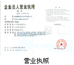
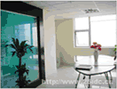

网页信息导航
1,我公司于2002年成立至今，具有丰富的污染治理经验。
2,我们拥有专业的技术人员、高素质的施工队伍、优质的产品以及完好的售后服务体系。
自2002年成立以来，我们的治理足迹已遍布锦州、葫芦岛、凌海、黑山、义县等地，先后为锦州及葫芦岛地区的银行、税务、保险、电力、产权处等单位以及东方庭院、天兴新大陆、时代家园、华庭园等众多小区的居民住宅解决了装修污染问题，治理后，其室内空气质量完全达到国家标准。
公司相关图片
公司办公环境
锦州红叶室内环境污染治理公司位于锦州市解放路四段五号（市科协２０１室），是本市成立最早的治理装修污染公司，专业从事车内及室内装修污染的治理工作．
我公司引进日本进口产品－光智子（光触媒）和国内唯一的纯植物治理装修污染产品－东方草甲醛清除剂．由专业的操作技师运用专用的喷涂设备对车内及室内污染进行全面、科学、有效的治理．治理后其空气质量均达到国家标准．公司秉承＂彻底治理装修污染，营造健康家居＂的理念，为广大业主竭诚服务．如今，我们的治理足迹已经遍布辽西地区，先后为葫芦岛地税、国税，锦州中行、商行、生命人寿、中华财产保险公司、锦州市电业局、锦州市工人文化宫等企事业单位以及锦州的东方庭院、华庭园、天兴新大陆、渤大小区、吉祥别墅、锦绣家园、时代家园、恒升现代城、万通公寓等小区业主解决了装修污染难题，治理效果得到了一致的好评与认可．
2、我们拥有专业的技术人员、高素质的施工队伍、 优质的产品以及完好的售后服务体系。
2、治理车内污染
3、销售清除甲醛专用产品，清除家具地板中甲醛污染.